Andalus Courtyard Residences
A courtyard that becomes an information system.
The digital strategy protects the courtyard proportions, arches, privacy and material logic while architecture, structure and building systems are developed as one coordinated decision environment.
Preserve the architectural idea while making every interface buildable.
The BIM journey begins with architectural intent, then moves through model authoring, multidisciplinary federation, structural alignment, building-services integration, time planning, cost visibility and operations-ready information.
Andalus Courtyard Residences
A cinematic sequence of coordinated models, digital construction thinking and project-specific BIM intelligence.
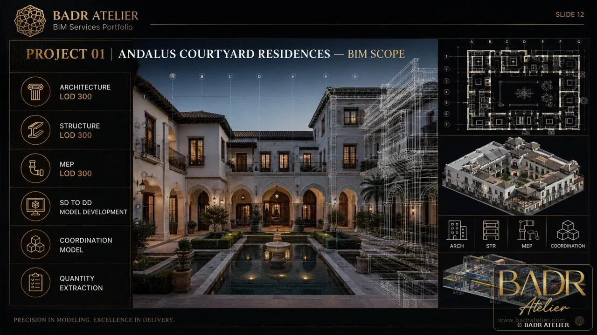
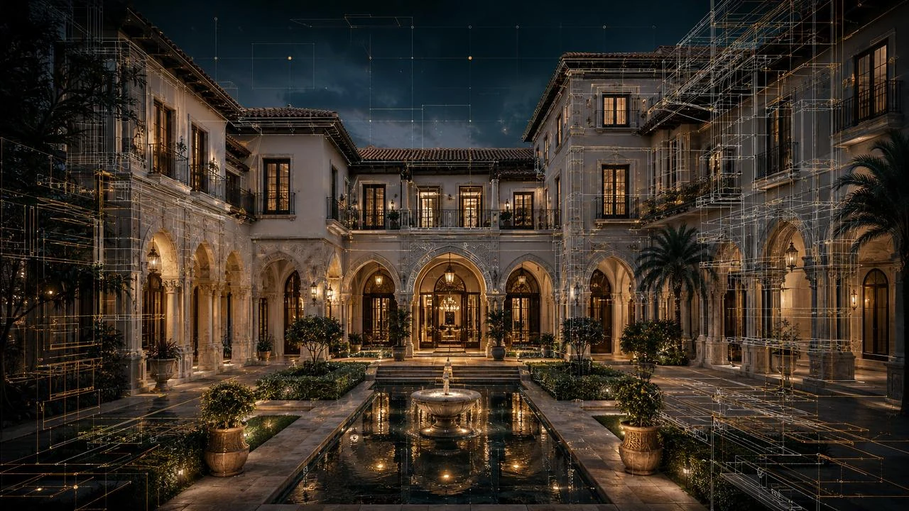
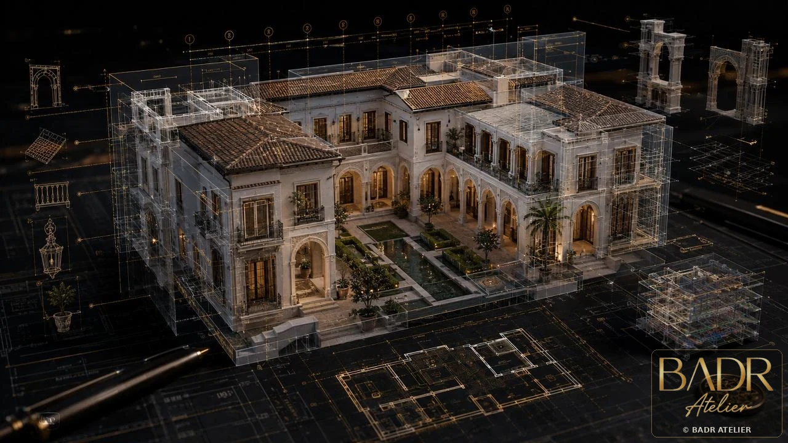
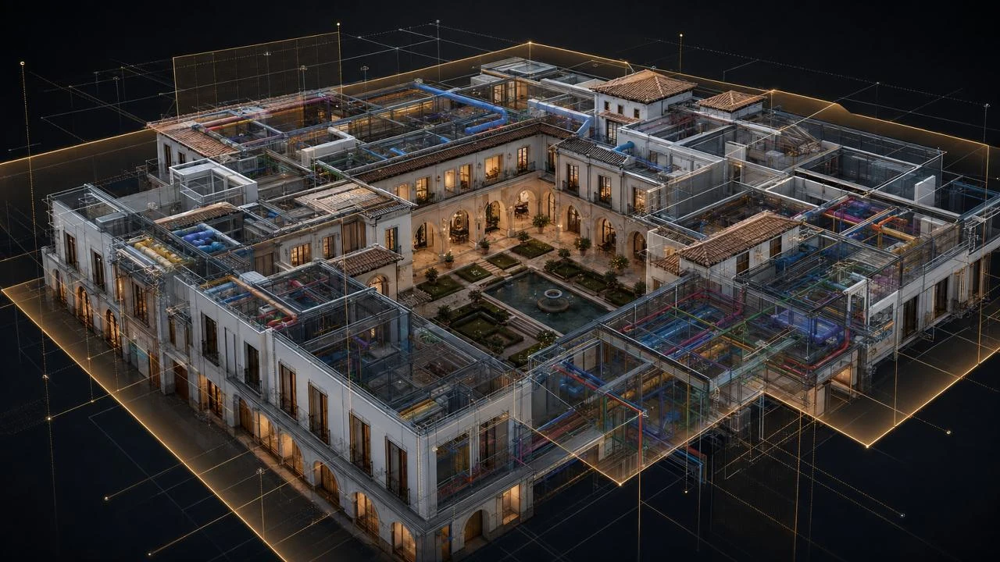
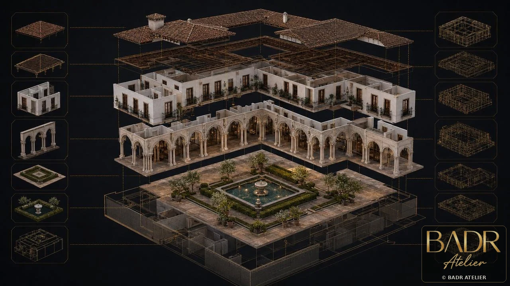
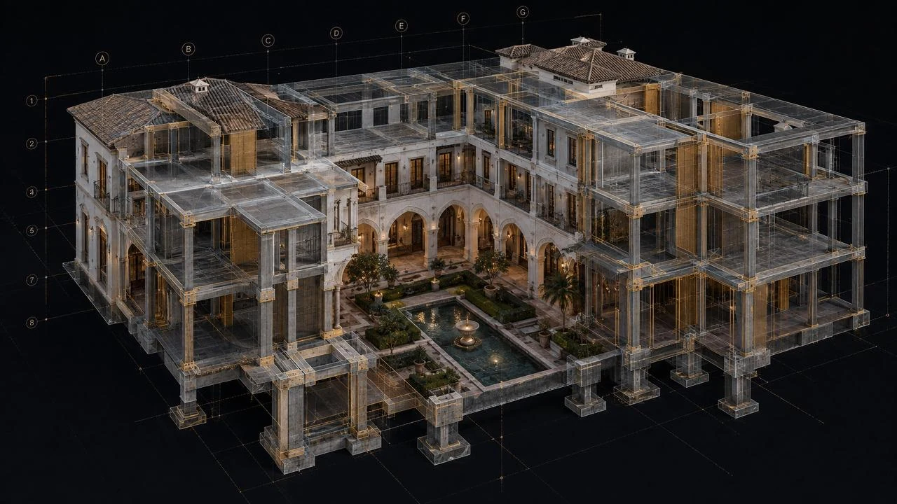
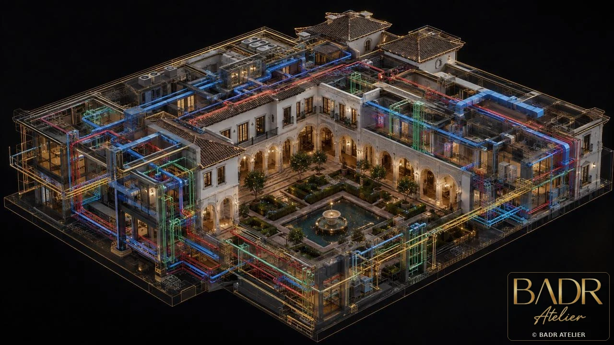
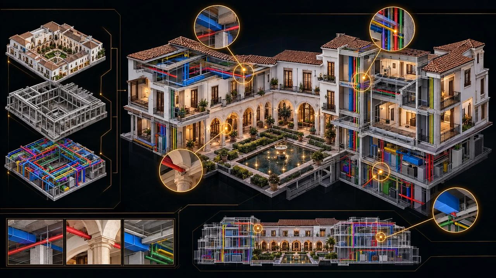
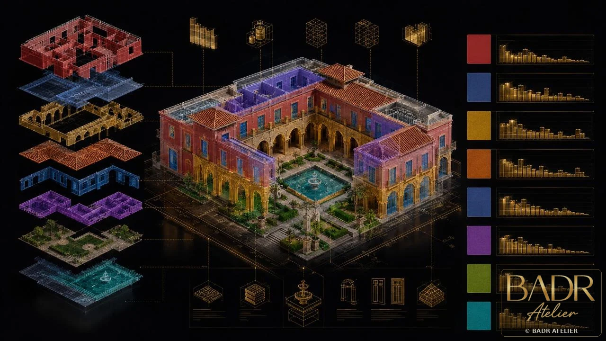
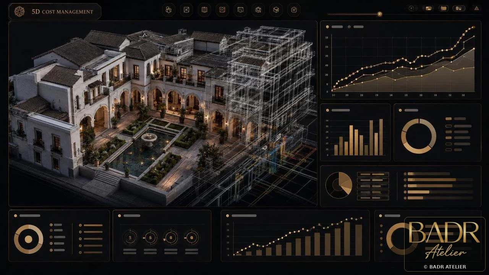
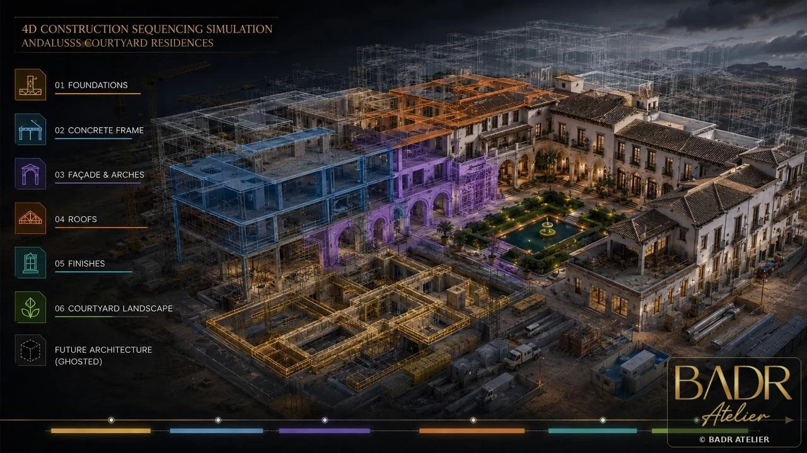
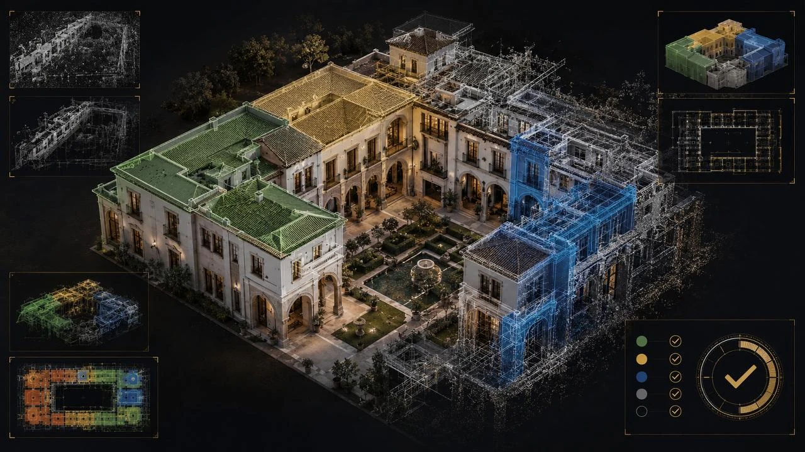
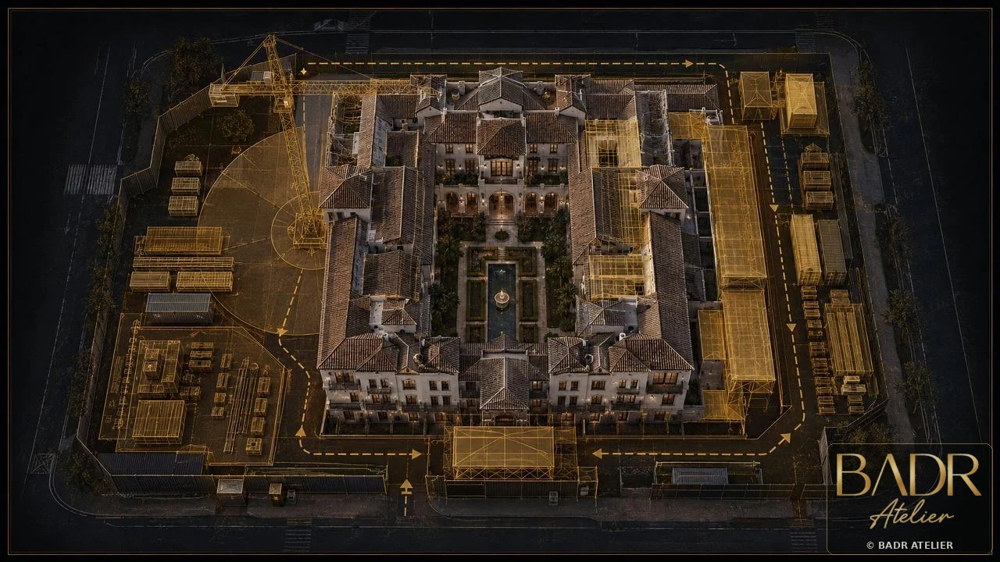
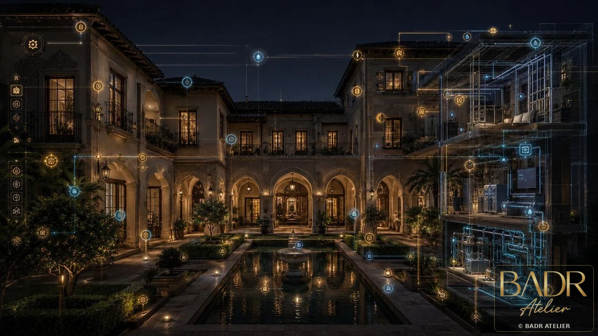
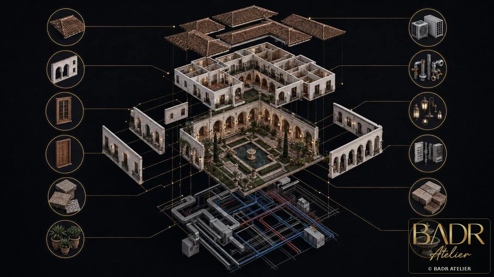
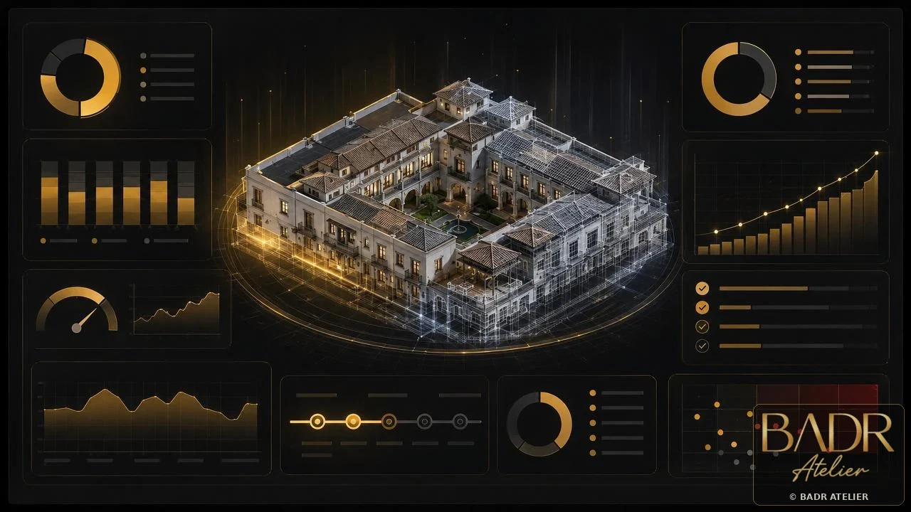